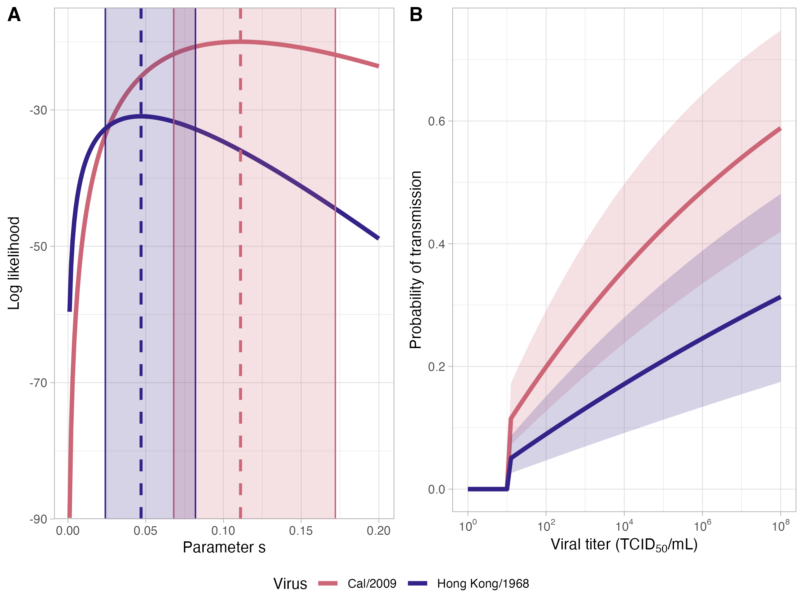

6 Reproducible Science
Reproduceerbaarheid houdt in dat onderzoekers die beschikken over dezelfde dataset en dezelfde scripts tot dezelfde conclusie moeten komen. Hiervoor is het nodig dat de data uit een onderzoek publiek is en dat alle analyses nauwkeurig zijn uitgevoerd en genoteerd in bijvoorbeeld een script. In veel publicaties is dit niet het geval. Vaak word de ruwe data of de uitgevoerde analyses achtergehouden waardoor de resultaten niet gereproduceerd kunnen worden.
6.1 Reproducing a dataset
## Linking to ImageMagick 6.9.13.29
## Enabled features: cairo, fontconfig, freetype, heic, lcms, pango, raw, rsvg, webp
## Disabled features: fftw, ghostscript, x11# Import data
celiqflow <- read_xlsx(here::here("data/reproducible_data/CE.LIQ.FLOW.062_Tidydata(1).xlsx"),
sheet = 1,)
# Change column variable type
celiqflow$compConcentration <- as.numeric(gsub(",",".",celiqflow$compConcentration))# Create graph
celiqflow %>%
ggplot(aes(x = log10(compConcentration), y = RawData,
colour = compName, shape = expType)) +
geom_point() +
geom_jitter(width = 0.1, height = 0.1) +
labs(title = "Amount of C.elegans after exposure to chemicals",
x = "Concentration (pct)",
y = "Count") +
theme_classic()
# Normalise data
celiqflow_normalised <- celiqflow %>%
mutate(normalised = RawData - elegansInput) %>%
mutate(normalised = normalised / mean(normalised, na.rm = T))
view(celiqflow)celiqflow_normalised %>%
ggplot(aes(x = log10(compConcentration), y = normalised,
colour = compName, shape = expType)) +
geom_point() +
geom_jitter(width = 0.1, height = 0.1) +
labs(title = "Amount of C.elegans after exposure to chemicals",
x = "Concentration (pct)",
y = "Count") +
theme_classic()## Warning: Removed 5 rows containing missing values or values outside the scale
## range (`geom_point()`).
## Removed 5 rows containing missing values or values outside the scale
## range (`geom_point()`).
De negatieve controle zijn C.elegans die niet behandeld zijn met medium i.p.v. een chamicalië. De positieve controles zijn behandeld met ethanol waarvond bekend is dat het toxisch is voor C.elegans. Aan de hand van de controles kan worden vastgested of spreiding van de data eruit ziet zoals verwacht word. Ook kan op basis van de controles worden ingechat hoe sterk het effect is van een experimentele conditie.
De data is genormaliseerd door de elegans input van de RawData af te trekken en deze waardes door het gemiddelde te delen van de gecorrigeerde data.
6.2 Beoordeling op reproduceerbaarheid van een artikel
Artikel: Quantifying viral pandemic potential from experimental transmission studies
Om toekomstige pandemiën te voorspellen word er onderzoek gedaan naar dierlijke virussen die een mogelijk risico vormen voor mensen. De huidige methoden die worden gebruikt om de kans op een pandemie te voorspellen zijn gelimiteerd en zeggen niet altijd iets over de besmettelijkheid onder mensen. In dit onderzoek word een model gepresenteerd die de resultaten van dierlijke transmissiestudies gebruikt om een kwantitatieve inschatting te maken van het risico op een pandemie.
Het analytische model dat word gepresenteerd lijkt goed te werken. De spreiding van twee influenza virussen onder fretten is getest en vergeleken met data van de werkeleijke verspreiding van het virus. Er worden wel een paar aannames gedaan. Onder andere dat de transmissie tussen fretten dezelfde dynamiek heeft als tussen mensen.

6.4 Reproductie van de data
As seen in the table above, the paper meets most of the requirements except for the ethics statement. The data is obtainable through a github page. It contains two folders of which the content isn’t immediately deducible. Both folders contain scripts. Furthermore, two csv files along with similarly named R scripts named after the two influenza variants (H1N1, H3N2) used in the experiment are found in the repository. Lastly 3 R scripts can be found in the repository.
The readme file contains an introduction and a link to the article and the origin of the data. Explanations of all the files and folders are provided as well.
I loaded the github repository in Rstudio and tried to execute the two scripts which visualises the initial data of each variant before any downstream analysis is done. Besides having to install a few packges, the script ran without error. The following two images were generated showing the Viral titer over time after ferrets got exposed to the virus.

I also managed to generate this image showing the likelyhood of transmission (A) based on the calculated parameter “s” and the probability of transmission based on the viral titer(B).

I tried running some other scripts which performs some of their analyses, but those would have taken too long to execute fully (hours). They seemed to be executing without error non the less. I decided to grade the reproducibility of the data 4/5. I was surprised by the fact that I could run the analyses without any errors. And the scripts generated the exact graphs used in the paper. The only remark I have is on the documentation and organisation of the scripts. They could provide some more detail regarding the function of the scripts and perhaps on the run time of the scripts. Lastly the data could have been put in a seperate data folder and all the scripts in a folder with respective subfolders.